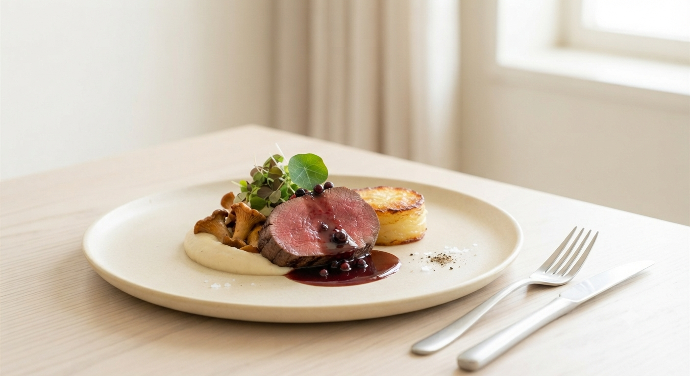
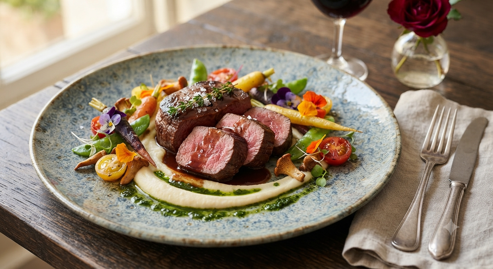
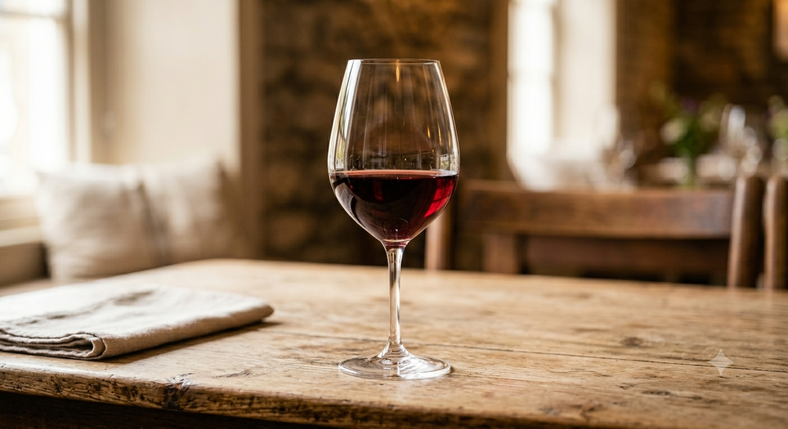

01
食材の権威
オーナー自ら厳選した岩手ブランド肉の数々。都内有名店でもなかなか扱えない希少な部位や新鮮な一品を愉しめます。
Reserve by Phone
019-651-5050Online Contact
お問い合わせフォーム
生産者の声を届ける
Farm to Table Experience
The Passion
かつて有楽町西武百貨店の食品課にいた伊東は、世界中の美食を知り尽くしました。しかし、彼が最終的に辿り着いたのは、故郷・岩手の素晴らしい食材たちでした。
「東京の人に、岩手の肉が美味しいと感動してもらいたい」。その一心で、25年以上もの間、生産者の元へ自ら足を運び、深い信頼関係を築き上げてきました。

01
オーナー自ら厳選した岩手ブランド肉の数々。都内有名店でもなかなか扱えない希少な部位や新鮮な一品を愉しめます。

02
南仏ローヌ地方「シャトー・ヌフ・デュ・パプ」をはじめ、料理の旨みを無限大に引き立てる極上のワイン・地ビールを揃えています。

03
本場イタリアや一流ホテルで培った20年以上の経験を持つシェフが、岩手の四季を表現する美しい一皿を仕立て上げます。
「今夜の気分」や「お好みの料理」を答えるだけで、ヌッフデュパプが誇る25年分のペアリングデータベースとAIが、あなたにぴったりの一杯をご提案する新ウェブサービスを準備中です。
短角牛や白金豚など、メニューに合わせた最適な熟成赤ワインをご提案。
「重めで華やか」「爽やかで軽快」など、直感的な言葉からベストマッチを導きます。
診断結果のペアリングセットをそのままオンラインで購入可能な連携機能。
2025年秋 リリースに向けて開発進行中